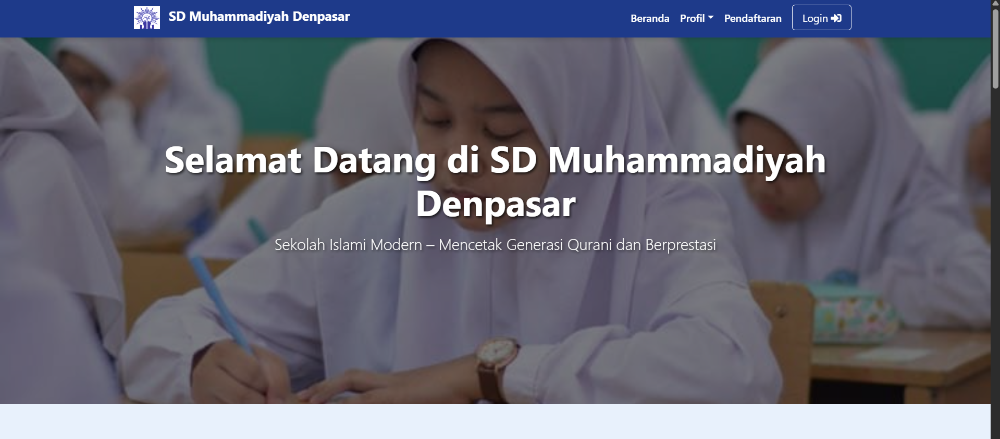
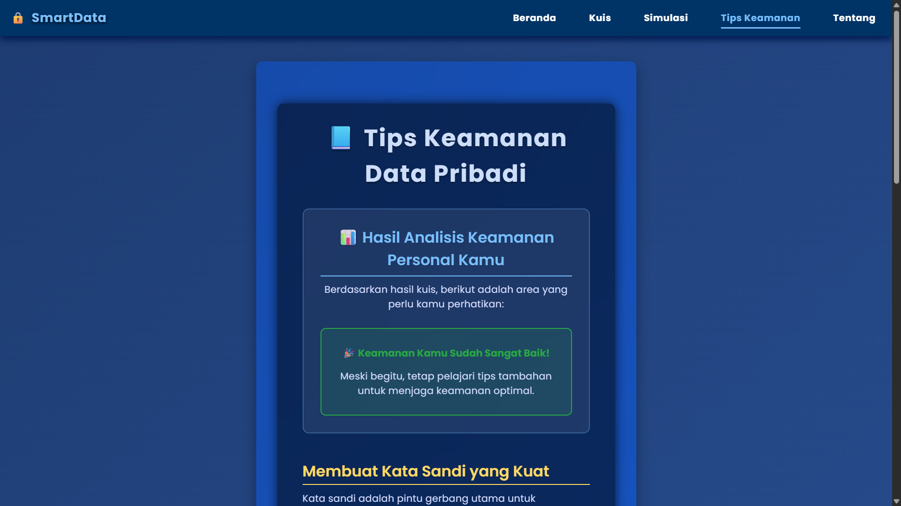

Project
Berikut beberapa project yang pernah saya kembangkan

Lihat Disini
Website SD Muhammadiyah Denpasar
Proyek Akhir Mata Kuliah Pemrograman Web
Website profil sekolah dengan fitur responsif, menampilkan visi-misi, data guru, program, dan galeri kegiatan untuk mendukung informasi bagi orang tua dan calon siswa.

Lihat Disini
Proyek KP – Website Informatif Keamanan Data
Perancangan Aplikasi Web Pengelolaan Risiko Kebocoran Data
Platform edukasi yang menyediakan informasi keamanan data usia remaja (15-20 Tahun) sebagai sarana informasi pengelolaan risiko kebocoran data pribadi.

Proyek Skripsi — Sistem Steganografi Audio LSB + AES-128
Skripsi Sarjana Teknologi Informasi
Mengembangkan sistem keamanan yang menggabungkan steganografi audio menggunakan metode LSB dengan enkripsi AES-128. Sistem ini berfungsi untuk menyembunyikan pesan ke dalam berkas audio dan menganalisis kualitas audio.